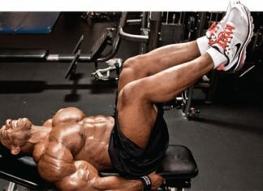
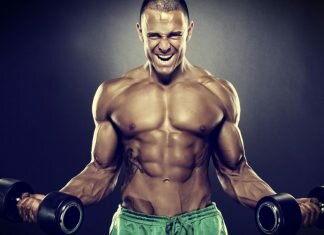

Gururla sergileyebileceğiniz bir fiziğe nasıl sahip olabilirsiniz? Dengeli bir beslenme düzeni (protein, yağ ve karbonhidrat) takip ederek ve üst vücut egzersizlerini ağırlık antrenmanı programlarınıza dâhil ederek heykel gibi bir fiziğe sahip olmanız hayal değil. Biz de bu yazımızda ağırlık antrenmanı programınızda mutlaka yer alması gereken üst vücut egzersizlerini derledik. Bu hareketleri ağırlık antrenmanlarınıza ekleyin ve muhteşem bir fiziğin keyfini çıkarın.
 